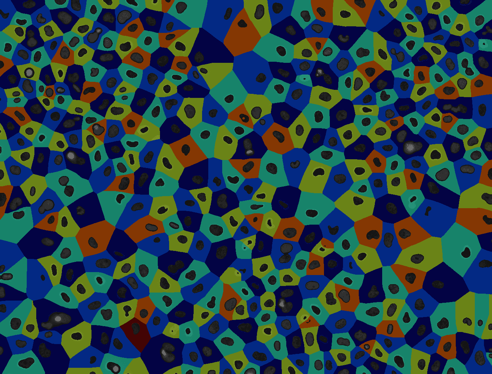
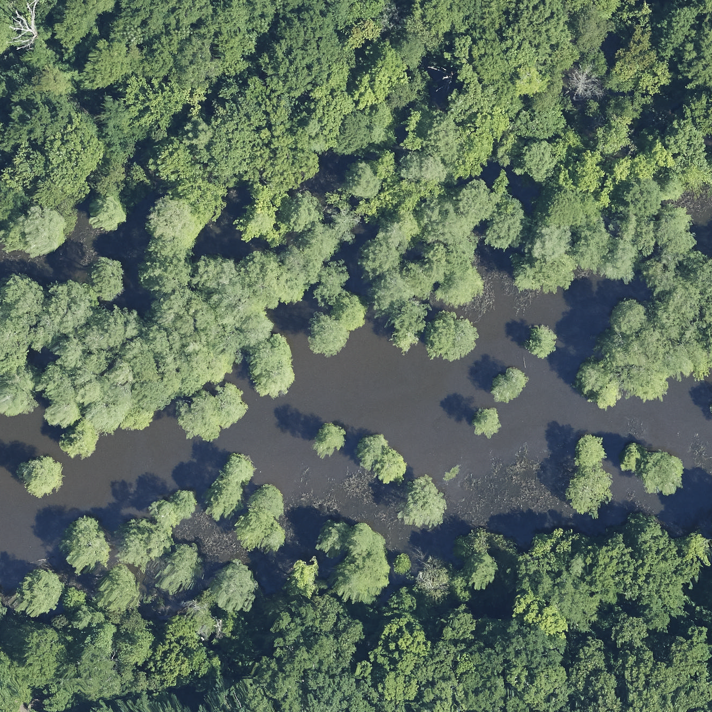
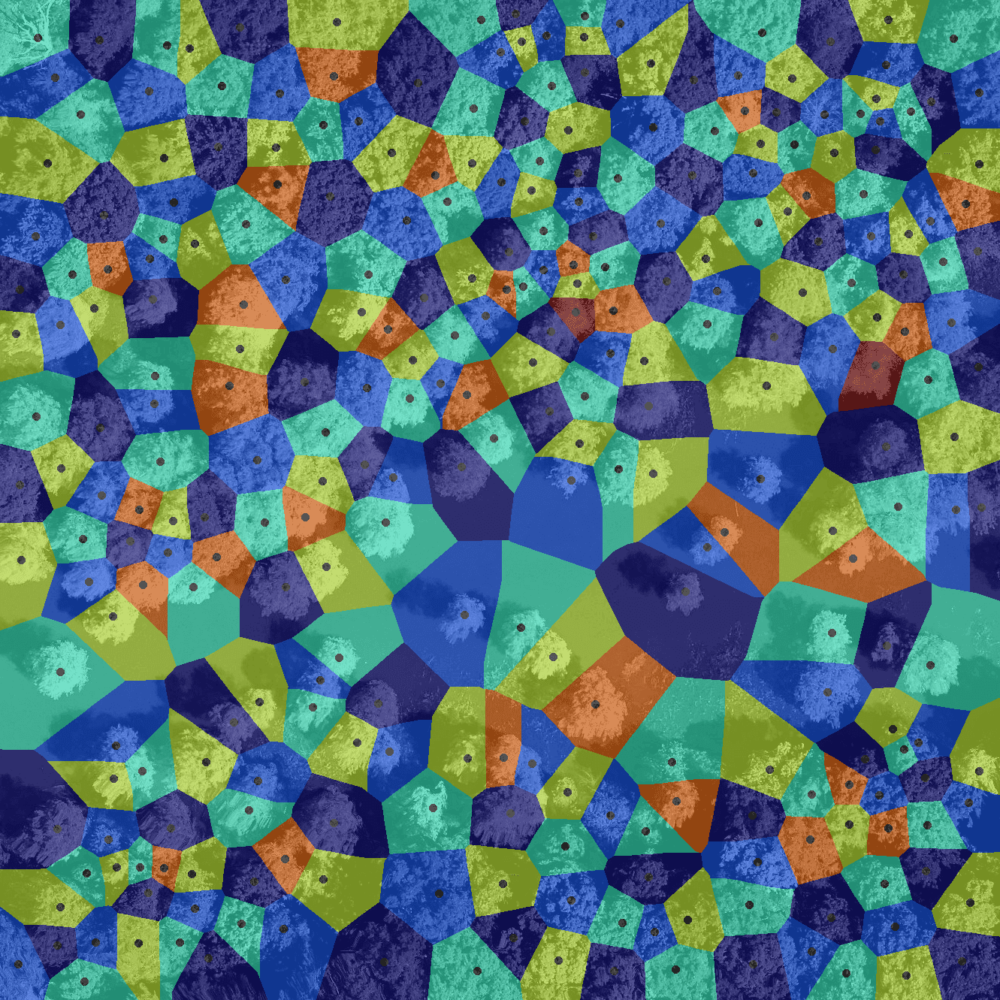
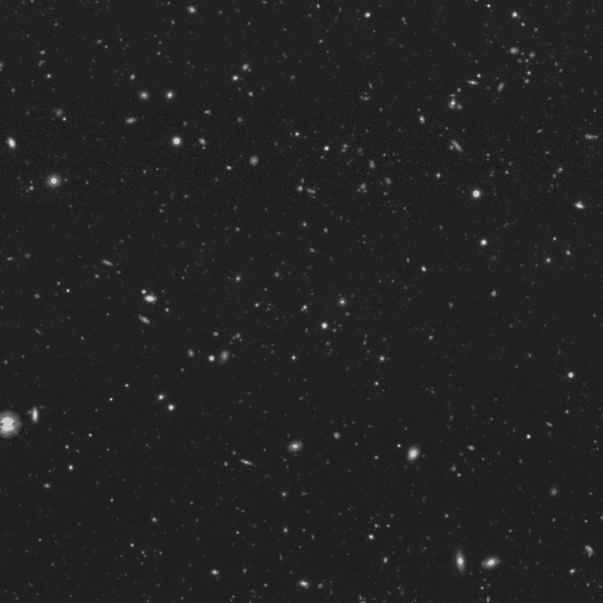
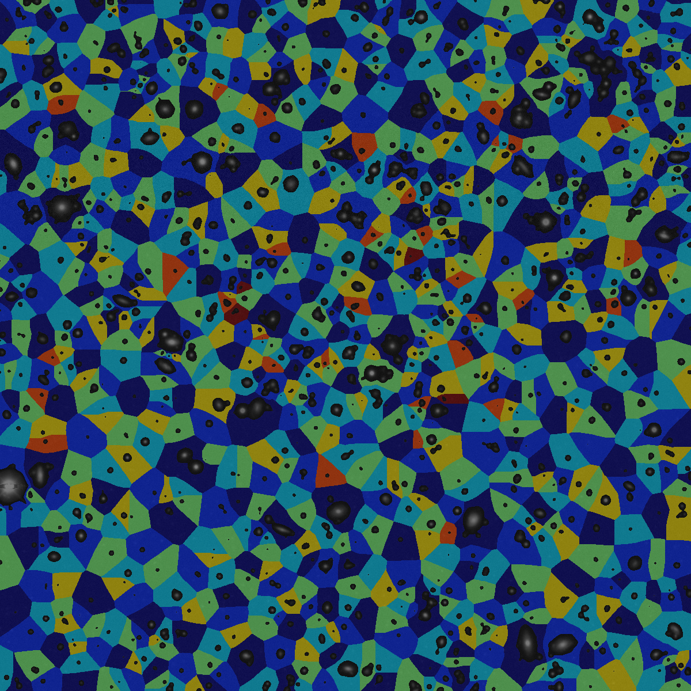

Voronoi segmentation
| Author(s) |
|
| Reviewers |
|
OverviewQuestions:
Objectives:
How do I partition an image into regions based on which object they are nearest to (Voronoi segmentation)?
How should images be preprocessed before applying Voronoi segmentation?
How can I overlay two images?
How can Voronoi segmentation be used to analyze spatial relationships?
How can extracted image properties be used to categorize identified objects?
Requirements:
How to perform Voronoi Segmentation in Galaxy.
How to extract a single channel from an image.
How to overlay two images.
How to count objectives in a layer map.
- Introduction to Galaxy Analyses
- tutorial Hands-on: FAIR Bioimage Metadata
- tutorial Hands-on: REMBI - Recommended Metadata for Biological Images – metadata guidelines for bioimaging data
- tutorial Hands-on: Introduction to Image Analysis using Galaxy
Time estimation: 1 hourSupporting Materials:Published: May 13, 2025Last modification: Jul 11, 2025License: Tutorial Content is licensed under Creative Commons Attribution 4.0 International License. The GTN Framework is licensed under MITpurl PURL: https://gxy.io/GTN:T00534version Revision: 4
Voronoi segmentation is a technique used to divide an image or space into regions based on the proximity to a set of defined points, called seeds or sites. Each region, known as a Voronoi cell, contains all locations that are closer to its seed than to any other. This approach is especially useful when analyzing spatial relationships, as it reveals how different areas relate in terms of distance and distribution. Voronoi segmentation is widely applicable for tasks where it’s important to understand the proximity or neighborhood structure of points, such as organizing space, studying clustering patterns, or identifying regions of influence around each point in various types of data.
Application to bioimage analysis
In bioimage analysis, Voronoi segmentation is a valuable tool for studying the spatial organization of cells, tissues, or other biological structures within an image. By dividing an image into regions around each identified cell or structure, Voronoi segmentation enables researchers to analyze how different cell types are distributed, measure distances between cells, and examine clustering patterns. This can provide insights into cellular interactions, tissue organization, and functional relationships within biological samples, such as identifying the proximity of immune cells to tumor cells or mapping neuron distributions within brain tissue.

Open image in new tabThese images are from Gunkel 2019.
Application to Earth Observation
In Earth observation, Voronoi segmentation is used to analyze spatial patterns and distributions in satellite or aerial images. By creating regions based on proximity to specific points, such as cities, vegetation clusters, or monitoring stations, Voronoi segmentation helps in studying how features are organized across a landscape. This method is particularly useful for mapping resource distribution, analyzing urban growth, monitoring vegetation patterns, or assessing land use changes. For instance, it can help divide an area into regions of influence around weather stations or identify how different land cover types interact spatially, aiding in environmental monitoring and planning.

Open image in new tab
Open image in new tabThese images are from Weinstein et al. 2022.
Application to Astronomy
In astronomy and large-scale sky surveys, a key objective is to identify individual celestial bodies—such as stars and galaxies—in sky images to enable detailed scientific analysis. Image segmentation is therefore a critical first step. In our case, Voronoi segmentation is used to divide the image into regions corresponding to individual objects or clusters. This method has the potential to separate overlapping or closely spaced sources, allowing for accurate analysis. Once segmented, these structures can be examined morphologically, and their luminosities can be measured with precision.

Open image in new tab
Open image in new tabThes original image is published by Legacy Surveys / D. Lang (Perimeter Institute) and can be downloaded from the official website. The Legacy Surveys are described in Dey et al. 2019.
AgendaIn this tutorial, we will cover:
Data requirements
Two images are required for Voronoi segmentation: A source image and a matching seed image containing objects from the source image annotated as white spots on a black background. The seed image can be prepared manually or using an automatic tool. To see how a seed image can be generated from a source image through smoothing and thresholding, see the Imaging introduction tutorial. For this tutorial, we have already prepared a seed image, which you can download from Zenodo in the next step. The Zenodo dataset contains two different pairs of seeds and images: one image of cells from the field of bioimaging and one image of tree crowns from the field of earth observation. Depending on your interest, you may choose which dataset to follow the tutorial with.
In principle, this tutorial can be followed with any type of data provided that you have an (image, seeds) pair that satisfies the following requirements:
Seeds:
- White seeds on a black background.
- Format: .tiff
Image:
- Preferrably lighter objects on a darker background for the mask to work well.
- Format: .tiff stored in planar, not interleaved format.
Comment: Checking the metadata of an imageTip: You can use the tool Show image info ( Galaxy version 5.7.1+galaxy1) to extract metadata from your image. The image metadata should have “SizeC = 3”. It should not say “SizeC = 3 (effectively 1)”, because that means that your image is stored in interleaved, not planar format.
Getting data from Zenodo
Hands On: Data Upload
Create a new history for this tutorial. When you log in for the first time, an empty, unnamed history is created by default. You can simply rename it.
To create a new history simply click the new-history icon at the top of the history panel:
Import galaxy-upload the following dataset from Zenodo.
https://zenodo.org/records/15281843/files/images_and_seeds.zip https://zenodo.org/records/15424465/files/image_and_seed.zip
- Important: Choose the type of data as
zip.The upload might take a few minutes.
- Copy the link location
Click galaxy-upload Upload at the top of the activity panel
- Select galaxy-wf-edit Paste/Fetch Data
Paste the link(s) into the text field
Press Start
- Close the window
- Unzip ( Galaxy version 6.0+galaxy0) the image with the following parameters:
- param-file “input_file”:
images_and_seeds.zip- “Extract single file”:
Single file- “Filepath”: Choose which data you want to use:
- Cells:
images_and_seeds/cell_image-B2--W00026--P00001--Z00000--T00000--dapi.tiff- Trees:
images_and_seeds/tree_image_2019_DELA_5_423000_3601000.tiff- Galaxies:
sky_image_IMAGE.pngRename galaxy-pencil the resulting file as
image.Check that the datatype is correct.
- Click on the galaxy-pencil pencil icon for the dataset to edit its attributes
- In the central panel, click galaxy-chart-select-data Datatypes tab on the top
- In the galaxy-chart-select-data Assign Datatype, select
datatypesfrom “New Type” dropdown
- Tip: you can start typing the datatype into the field to filter the dropdown menu
- Click the Save button
- Unzip ( Galaxy version 6.0+galaxy0) the seed with the following parameters:
- param-file “input_file”:
images_and_seeds.zip- “Extract single file”:
Single file- “Filepath”: Choose the seed image corresponding to the image you chose in the last step.
- Cells:
images_and_seeds/cell_seeds-B2--W00026--P00001--Z00000--T00000--dapi.tiff- Trees:
images_and_seeds/tree_seeds_2019_DELA_5_423000_3601000.tiff- Galaxies:
sky_image_SEED.png- Rename galaxy-pencil the resulting file as
seeds.

Generate an object mask from pixel intensity
In case there should be empty regions without cells in the image, we wish to constrain the single Voronoi regions to roughly the area where a cell is. Therefore, we first smooth the image to reduce the influence of noise, and then apply a threshold on the smoothed image to get a binary mask.
Comment: Mask vs seedsThe process used to create a mask can also be used to make seeds, as in the Imaging introduction tutorial.
Hands On: Task descriptionThe image has three channels (red, green, blue). To generate a mask, we have to select a channel, for instance channel
0.
- Convert image format ( Galaxy version 6.7.0+galaxy3) with the following parameters:
- param-file “Input Image”:
image- “Extract series”:
All series- “Extract timepoint”:
All timepoints- “Extract channel”:
Extract channel
- “Channel id”
0- “Extract z-slice”:
All z-slices- “Extract range”:
All images- “Extract crop”:
Full image- “Tile image”:
No tiling- “Pyramid image”:
No PyramidRename the output to
single channel image- Filter 2-D image ( Galaxy version 1.12.0+galaxy1) with the following parameters:
- param-file “Input Image”:
single channel image- “Filter type”:
Gaussian
- “Sigma”:
3Rename the output to
smoothed image.- Threshold image ( Galaxy version 0.18.1+galaxy3) with the following parameters:
- param-file “Input Image”:
smoothed image- “Thresholding method”:
Manual
- “Threshold value”:
3.0. Note: This threshold value works well for the cell image, where the background has a very low intensity. For images with a brighter background, the threshold value will need to be adjusted.- Rename the output to
mask.
Comment: How many channels does my image have?Note: If providing your own image, you can check how many channels your image has with the Show image info ( Galaxy version 5.7.1+galaxy1) tool. The number of channels is listed as, e.g.,
SizeC = 3for the cell image orSizeC = 3 (effectively 1)for the tree image.
Comment: The value of "Sigma" and the "Threshold value"Note: Generating a robust mask is harder for images with more noise. Since the tree image has more noise than the cell image, you may have to adjust the value of “Sigma” to achieve better results. You may also have to adjust the “Threshold value” in the last step.
QuestionWhat is the purpose of the smoothing step?
The purpose of smoothing is to reduce noise. For seed generation, noise might lead to false seeds where there is no object. Smoothing also promotes connectedness within an object, where noise might make an object appear as two separate objects. For mask generation, the same principles apply.
Perform Voronoi segmentation based on the seeds
Hands On: Task descriptionWe need to assign a unique label to each object in the seed image:
- Convert binary image to label map ( Galaxy version 0.5+galaxy0) with the following parameters:
- param-file “Binary Image”:
seeds- “Mode”:
Connected component analysisRename the output to
label map.- Compute Voronoi tessellation ( Galaxy version 0.22.0+galaxy3). We use the label map to perform Voronoi segmentation.
- param-file “Input Image”:
label map- Rename the output to
tessellation.
QuestionHow does the size of the seeds influence the Voronoi segmentation?
A Voronoi segmentation partition a plane into regions based on proximity to each member of a given set of objects. The algorithm is the same irregardless of whether the seeds are single points or objects with a spatial extent, but the size of the seeds will certainly alter the segmentation in some way.
Apply the mask and visualize the segmentation
A Voronoi tessellation segments an image into non-overlapping segments that cover the entire image. This makes sure that segments do not overlap, but empty spaces between objects will be counted as part of the segment belonging to the nearest item. A more accurate segmentation can be achieved by using the mask to reduce the size of the Voronoi segments. This can be achieved with the following operation.
Hands On: Task descriptionCombine the tessellation with the seeds and the mask to generate a segmentation that limits the expanse of each segment:
- Process images using arithmetic expressions ( Galaxy version 1.26.4+galaxy2) with the following parameters:
- “Expression”:
tessellation * (mask / 255) * (1 - seeds / 255)- In “Input images”:
- param-repeat “Insert Input images”
- param-file “Input Image”:
tessellation- “Variable for representation of the image within the expression”:
tessellation- param-repeat “Insert Input images”
- param-file “Input Image”:
seeds- “Variable for representation of the image within the expression”:
seeds- param-repeat “Insert Input images”
- param-file “Input Image”:
mask- “Variable for representation of the image within the expression”:
maskRename the output to
masked segmentation.- Colorize label map ( Galaxy version 3.2.1+galaxy3).
- param-file “Input Image”:
masked segmentation- “Radius of the neighborhood”:
10(works well for the cell image; may need adjustment for the tree image)- “Background label”:
0Rename the output to
colorized label map- Convert single-channel to multi-channel image ( Galaxy version 1.26.4+galaxy0) with:
- param-file “Input Image”:
single channel image- “Number of channels”:
3Rename the output to
multi channel image- Overlay images ( Galaxy version 0.0.4+galaxy4) with the following parameters to overlay the Voronoi segmentation on the original image:
- “Type of the overlay”:
Linear blending- param-file “Image 1”:
multi channel image- param-file “Image 2”:
colorized label map- “Weight for blending”:
0.5
Count objects and extract image features
Hands On: Task description
- Count objects in label map ( Galaxy version 0.0.5-2).
- param-file “Input Image”:
tessellation- Extract image features ( Galaxy version 0.18.1+galaxy0) with the following parameters:
- param-file “Label map”:
tessellation- “Use the intensity image to compute additional features”:
Use intensity image
- param-file “Intensity Image”:
single channel image- “Select features to compute”:
Select features- “Available features”:
- param-check
Label from the label map- param-check
Max Intensity- param-check
Mean Intensity- param-check
Minimum Intensity- param-check
Area- param-check
Major axis length- param-check
Minor axis length
In this last step, we compute the max, min and mean intensity for each image segment, as well as the area and the major and minor axis lengths. Depending on the use case, the distribution of these extracted features could reveal different subgroups in the data. In this way, the features could be used in to categorize different types of trees, cells, or other items. We will now use a scatter plot to explore the data.
Visualize segment features with a scatter plot
Hands On: Plot feature extraction results
- Click on the Visualize galaxy-barchart icon of the tool Extract image features output.
- Run Scatter plot (NVD3) with the following parameters:
- “Provide a title”:
Segment features- “X-Axis label”:
Major axis length- “Y-Axis label”:
Minor axis length- “Column of data point labels”:
Column 1- “Values for x-axis”:
Column 6- “Values for y-axis”:
Column 7QuestionPlot the major axis lengths together with the minor axis lengths. What do you observe?
The major and minor axis lengths appear to be positively correlated, which is not surprising. It means that segments with a major axis that is longer than others typically have a longer minor axis too.
Conclusion
This pipeline performs Voronoi segmentation and can be applied to datasets from any field as long as the input data satisfies the input data criteria. The steps in this tutorial are also available on Galaxy as a published workflow called Voronoi segmentation.
You've Finished the Tutorial
Key points
Voronoi segmentation is a simple algorithm, chosen to give a starting point for working with image segmentation.
This tutorial exemplifies how a Galaxy workflow can be applied to data from several different domains.
Frequently Asked Questions
Have questions about this tutorial? Have a look at the available FAQ pages and support channelsUseful literature
Further information, including links to documentation and original publications, regarding the tools, analysis techniques and the interpretation of results described in this tutorial can be found here.
References
- Dey, A., D. J. Schlegel, D. Lang, R. Blum, K. Burleigh et al., 2019 Overview of the DESI Legacy Imaging Surveys. \aj 157: 168. 10.3847/1538-3881/ab089d
- Gunkel, M., 2019 Microscope Image Analysis Course Sept 2109 – Images siRNA Screen. Data set. 10.5281/zenodo.3362976
- Weinstein, B., S. Marconi, and E. White, 2022 Data for the NeonTreeEvaluation Benchmark (0.2.2). Data set. 10.5281/zenodo.5914554
Feedback
Did you use this material as an instructor? Feel free to give us feedback on how it went.
Did you use this material as a learner or student? Click the form below to leave feedback.

Citing this Tutorial
- Even Moa Myklebust, Riccardo Massei, Leonid Kostrykin, Anne Fouilloux, Voronoi segmentation (Galaxy Training Materials). https://training.galaxyproject.org/training-material/topics/imaging/tutorials/voronoi-segmentation/tutorial.html Online; accessed TODAY
- Hiltemann, Saskia, Rasche, Helena et al., 2023 Galaxy Training: A Powerful Framework for Teaching! PLOS Computational Biology 10.1371/journal.pcbi.1010752
- Batut et al., 2018 Community-Driven Data Analysis Training for Biology Cell Systems 10.1016/j.cels.2018.05.012
@misc{imaging-voronoi-segmentation, author = "Even Moa Myklebust and Riccardo Massei and Leonid Kostrykin and Anne Fouilloux", title = "Voronoi segmentation (Galaxy Training Materials)", year = "", month = "", day = "", url = "\url{https://training.galaxyproject.org/training-material/topics/imaging/tutorials/voronoi-segmentation/tutorial.html}", note = "[Online; accessed TODAY]" } @article{Hiltemann_2023, doi = {10.1371/journal.pcbi.1010752}, url = {https://doi.org/10.1371%2Fjournal.pcbi.1010752}, year = 2023, month = {jan}, publisher = {Public Library of Science ({PLoS})}, volume = {19}, number = {1}, pages = {e1010752}, author = {Saskia Hiltemann and Helena Rasche and Simon Gladman and Hans-Rudolf Hotz and Delphine Larivi{\`{e}}re and Daniel Blankenberg and Pratik D. Jagtap and Thomas Wollmann and Anthony Bretaudeau and Nadia Gou{\'{e}} and Timothy J. Griffin and Coline Royaux and Yvan Le Bras and Subina Mehta and Anna Syme and Frederik Coppens and Bert Droesbeke and Nicola Soranzo and Wendi Bacon and Fotis Psomopoulos and Crist{\'{o}}bal Gallardo-Alba and John Davis and Melanie Christine Föll and Matthias Fahrner and Maria A. Doyle and Beatriz Serrano-Solano and Anne Claire Fouilloux and Peter van Heusden and Wolfgang Maier and Dave Clements and Florian Heyl and Björn Grüning and B{\'{e}}r{\'{e}}nice Batut and}, editor = {Francis Ouellette}, title = {Galaxy Training: A powerful framework for teaching!}, journal = {PLoS Comput Biol} }
Funding
These individuals or organisations provided funding support for the development of this resource
You can use Ephemeris's
shed-tools installcommand to install the tools used in this tutorial.shed-tools install [-g GALAXY] [-a API_KEY] -t <(curl https://training.galaxyproject.org/training-material/api/topics/imaging/tutorials/voronoi-segmentation/tutorial.json | jq .admin_install_yaml -r)Alternatively you can copy and paste the following YAML
--- install_tool_dependencies: true install_repository_dependencies: true install_resolver_dependencies: true tools: - name: 2d_auto_threshold owner: imgteam revisions: 699a5e9146b3 tool_panel_section_label: Imaging tool_shed_url: https://toolshed.g2.bx.psu.edu/ - name: 2d_feature_extraction owner: imgteam revisions: 5bc8cdc17fd0 tool_panel_section_label: Imaging tool_shed_url: https://toolshed.g2.bx.psu.edu/ - name: 2d_simple_filter owner: imgteam revisions: d51310ab328a tool_panel_section_label: Imaging tool_shed_url: https://toolshed.g2.bx.psu.edu/ - name: bfconvert owner: imgteam revisions: fcadded98e61 tool_panel_section_label: Imaging tool_shed_url: https://toolshed.g2.bx.psu.edu/ - name: binary2labelimage owner: imgteam revisions: 984358e43242 tool_panel_section_label: Imaging tool_shed_url: https://toolshed.g2.bx.psu.edu/ - name: colorize_labels owner: imgteam revisions: 5907be5a8d7c tool_panel_section_label: Imaging tool_shed_url: https://toolshed.g2.bx.psu.edu/ - name: count_objects owner: imgteam revisions: b58447a2eed2 tool_panel_section_label: Imaging tool_shed_url: https://toolshed.g2.bx.psu.edu/ - name: image_info owner: imgteam revisions: f8b4eada923c tool_panel_section_label: Imaging tool_shed_url: https://toolshed.g2.bx.psu.edu/ - name: image_math owner: imgteam revisions: 48fa3ac55df2 tool_panel_section_label: Imaging tool_shed_url: https://toolshed.g2.bx.psu.edu/ - name: overlay_images owner: imgteam revisions: ca362a9bfa20 tool_panel_section_label: Imaging tool_shed_url: https://toolshed.g2.bx.psu.edu/ - name: repeat_channels owner: imgteam revisions: 7cdb50fee601 tool_panel_section_label: Imaging tool_shed_url: https://toolshed.g2.bx.psu.edu/ - name: unzip owner: imgteam revisions: 57f0914ddb7b tool_panel_section_label: Collection Operations tool_shed_url: https://toolshed.g2.bx.psu.edu/ - name: voronoi_tesselation owner: imgteam revisions: 1944b0fccdbd tool_panel_section_label: Imaging tool_shed_url: https://toolshed.g2.bx.psu.edu/